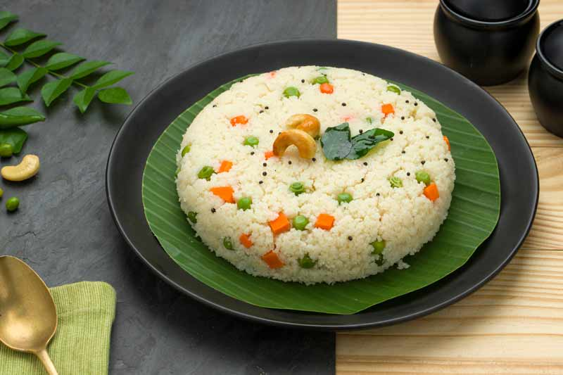

Upma

Description
Upma is a flavorful, tasty, savory and popular South Indian breakfast that is made with cream of wheat or
semolina flour (called rava or suji), a few lentils, nuts, vegetables, herbs and spices.
This traditional dish involves cooking roasted rava in water that has been flavored by ghee (or oil), cashews,
urad dal (white lentils), chana dal (husked and split bengal gram), onion, ginger and additional herbs and
spices. Sugar can be added for a mildly sweet and savory dish.
This steaming hot breakfast dish can be made vegan by using oil instead of ghee. Full of warmth, flavor and
deliciousness, this upma tastes so good. So why not take a break from that boring oatmeal and try something new?
You can’t lose!
Ingredients
- ⅓ cup finely chopped onions
- 1 teaspoon chopped green chillies
- 1 teaspoon finely chopped ginger
- 2 tablespoons coriander leaves (cilantro)
- 8 to 10 curry leaves
- 10 to 12 cashews
- 1 teaspoon chana dal (hulled and split bengal gram)
- 1 teaspoon urad dal (hulled and split black gram)
Steps
- In a pan, heat 2 tablespoons ghee (clarified butter) or oil. You could use sunflower oil or peanut oil or
safflower oil or any neutral tasting oil.
- Lower the heat. Add 1 teaspoon mustard seeds. When you hear the crackling sound of mustard seeds, it means
they are getting fried.
- Now add the following ingredients:
- ½ teaspoon cumin seeds
- 1 teaspoon chana dal (husked and split bengal gram)
- 1 teaspoon urad dal (husked and split black gram)
- Stirring often fry until the chana dal and urad dal begin to brown a bit.
- Immediately add 10 to 12 cashews and begin to fry on a low to medium-low heat.
- By the time the cashews get golden the dals should also be golden.
- Now add the ⅓ cup of finely chopped onions.
- Sauté the onions until they soften and become translucent on a low to medium-low heat.
- Then add 1 teaspoon chopped green chillies, 1 teaspoon chopped ginger and 8 to 10 curry leaves.
- Mix well and sauté for a few seconds.
- Then add 2.5 cups water to this mixture.
-
Add salt as required. Mix well and check the taste of water. It should be a bit salty but not too much.
In case if the salt becomes less in the dish, you can always sprinkle some salt from the top when eating.
- (optional)Then add 1 teaspoon sugar.
- Stir again. On a medium to high flame, heat the water and let it come to a rolling boiling.
- When the water comes to a rolling boil, lower the flame to its lowest. Then add the rava in 4 to 5 batches
with a spoon.
- Once you add the first batch of rava, stir and mix immediately so that the roasted rava gets mixed evenly
with the water.
- Then add the next batch of rava. Mix and stir again very well ensuring that the batch of rava is mixed
evenly in water.
- Continue to add and stir the rava up to the last batch.
- Quickly stir and mix very well. The rava grains will absorb water, swell and get cooked.
- Cover and allow the rava upma to steam for 2 to 3 minutes on a low heat.
- Then turn off the heat. In the below photo, the rava is cooked well and the suji ka upma is ready.
- Lastly add about 2 tablespoons of chopped coriander leaves (cilantro). You can add more coriander leaves if
you like.